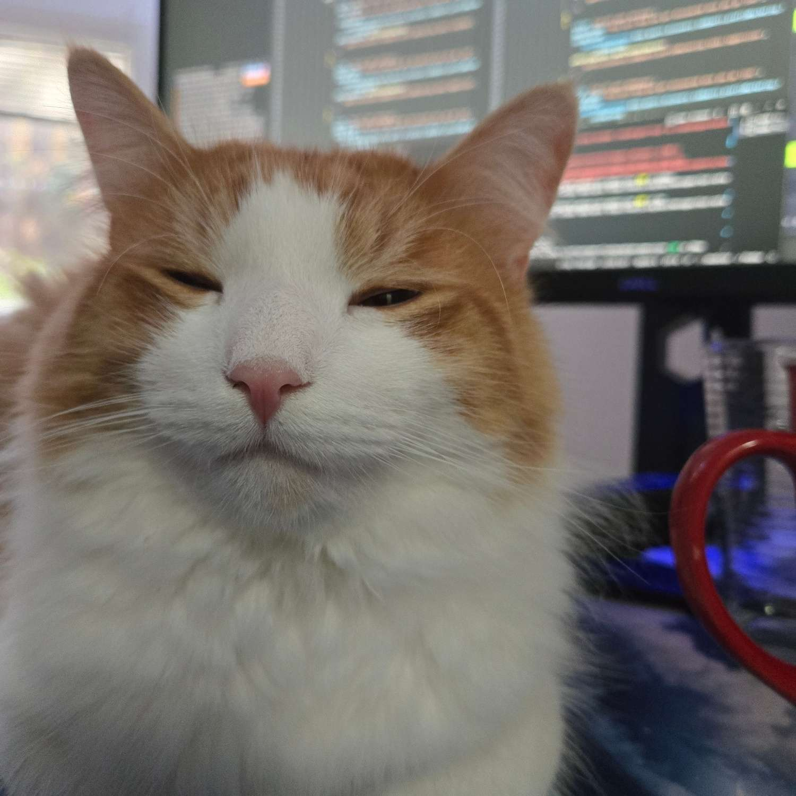
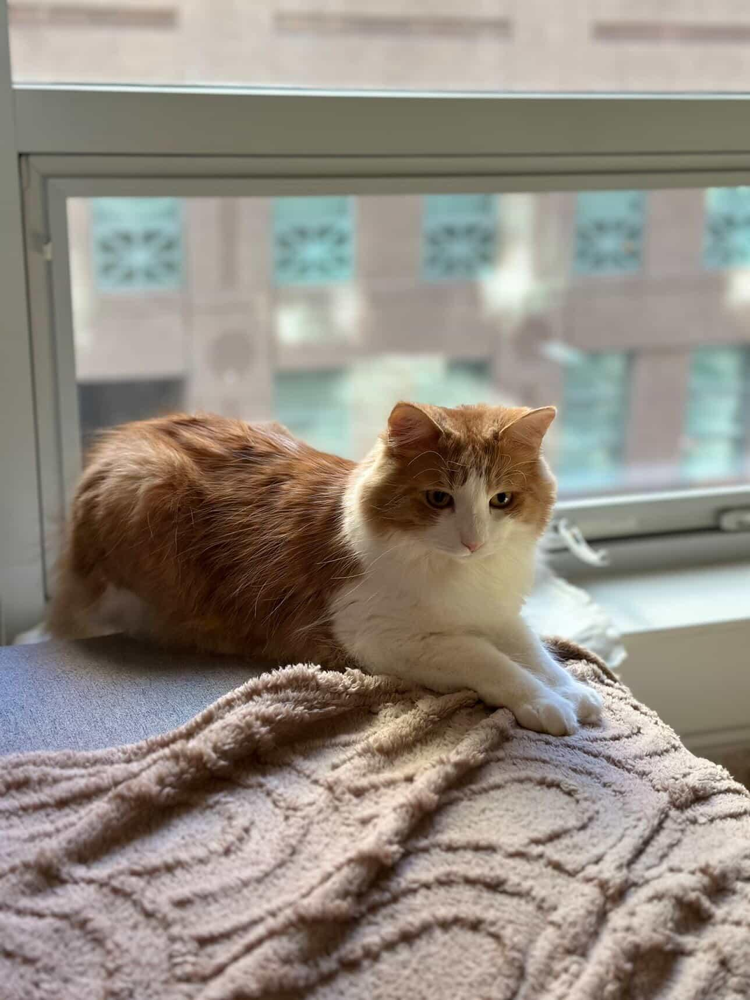

How It Runs
- Weekly updates summarize what each skill did in the workflow.
- Simple weekly check-ins to keep the workflow clear and useful.
- Skill vs MCP: a skill is the workflow method; MCP is the live integration layer you use with that skill.
rfischbackdev
Top workflow skills, with quick weekly update logs.


Centers work on Subagent Driven Development so a lead agent orchestrates specialized subagents for implementation and review.
Use the linear skill with Linear MCP to create, update, and track tickets without context switching.
Use the figma skill with Figma MCP to pull design context and assets for faster, cleaner implementation.
Write the failing test first, then implement minimal code to reduce regressions.
Use hypotheses and checks to isolate root cause instead of guessing.
Run fresh verification before marking anything complete.